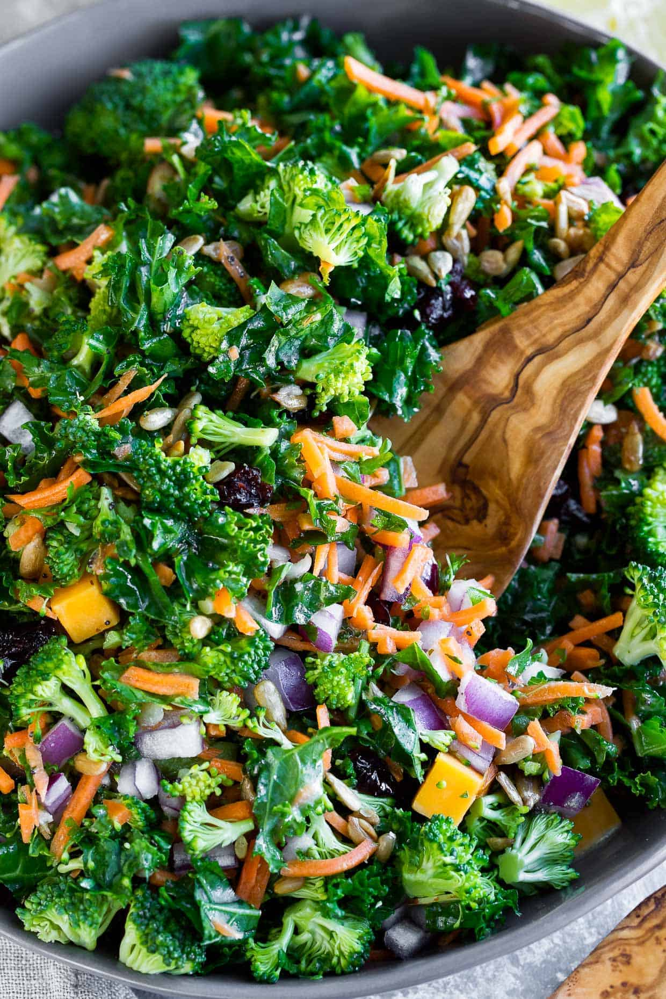

Kale Salad

Description
"A fresh salad is a perfect lunch or side for almost any meal.
This easy kale salad is packed with fresh veggies and a super simple homemade lemon dressing, making it perfect as a healthy side dish!
Full of fresh ingredients with lots of flavor and crunch, this is definitely one of my very favorite kale salad recipes!"- Jennifer
List of Ingredients
- 2 cups of kale
- 1 tbsp (15ml) Olive Oil
Cooking Steps
- Rinse the kale leaves in cold water.
- Remove the thick stem by pulling off the leaves.
- Spin dry in a salad spinner or shake dry and dab with a kitchen towel.
- Massage the kale
- Tear or chop the washed kale into bite-sized pieces, then sprinkle with a pinch of salt.
- Next drizzle a little olive oil in your hands, just a tiny bit! Pick up some of the kale and rub it, massaging the leaves until they darken in color and become tender.
Link to Kale Salad Recipe!
Return to Homepage